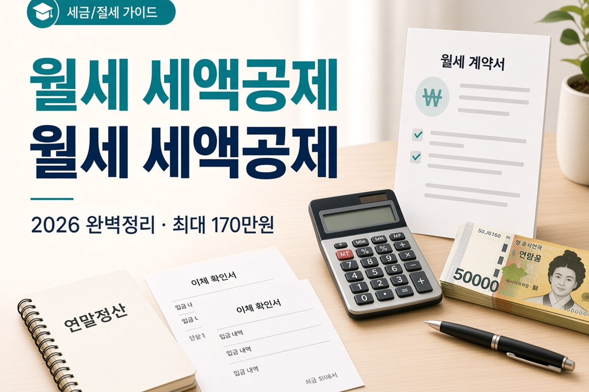

월세 세액공제 2026 완벽정리 — 최대 170만원 환급받는 법
무주택 근로자 요건·공제율·한도·서류·경정청구까지, 국세청 안내 기준으로 표로 정리합니다

사회초년생·무주택 직장인이라면, 매달 나가는 월세를 “그냥 생활비”로만 생각하기 쉽습니다. 그런데 요건을 맞추면 연말정산에서 월세 세액공제로 세금을 돌려받을 수 있습니다. 현행 기준으로 공제대상 월세액 한도는 연 1,000만원이고, 공제율 최대 17%를 적용하면 최대 170만원까지 세액공제가 가능합니다. (근거: 국세청 공식 안내) 오늘은 확정된 현행 제도를 먼저 표로 잡고, 정부 세제개편안은 별도 섹션에서 “국회 미통과 정부안”으로만 구분해 설명합니다.
1. 도입 — 월세 내면 연말정산에서 돌려받을 수 있나요?
짧게 답하면 “조건이 맞으면 가능합니다.” 총급여·무주택·주택 규모(또는 기준시가)·전입신고·명의가 맞아야 하고, 이체 증빙까지 갖춰야 회사 연말정산에서 반영됩니다. “월세 냈으니까 무조건 170만원”이 아닙니다. 한도와 공제율을 곱한 값이 최대치이고, 실제 월세·총급여에 따라 달라집니다.
이 글의 순서는 이렇습니다. 누가·어떤 집이 되는지 → 공제율·한도 표 → 계산 예시 → 자주 틀리는 포인트 → 2026 세제개편안(정부안) → 서류·경정청구 → FAQ. 정확한 요건·계산은 국세청 홈택스(hometax.go.kr) 및 세무 전문가 확인이 필요합니다. 회사 연말정산 안내문에 “월세 세액공제” 항목이 있으면 제출 기한을 달력에 표시해 두세요. 기한을 넘기면 당해 연말정산에서 빠지고, 이후에는 경정청구로 넘어가게 됩니다. 가능하면 당해 연말에 한 번에 끝내는 편이 서류도 덜 헷갈립니다. 궁금한 칸 이름은 국세청 월세 세액공제 안내 페이지와 대조하면 됩니다. 숫자보다 서류·전입이 먼저입니다. 한 줄 메모면 됩니다.
연말정산 시즌이 되면 “월세 공제 서류 내셨나요?”라는 말을 듣게 됩니다. 서류를 갑자기 찾으려니 계약서·이체내역이 흩어져 있어 포기하는 경우도 있습니다. 요건만 미리 알아 두면, 이사할 때·이체할 때부터 증빙을 남기는 습관이 생깁니다. 이 글은 환급을 약속하지 않습니다. 국세청이 안내하는 칸 이름을 익히는 데 초점을 둡니다.
2. 누가 받을 수 있나 — 공제대상자
국세청 안내에 따르면 공제대상자는 아래를 충족해야 합니다.
- 총급여 8,000만원 이하 근로자 (종합소득금액 7,000만원 이하)
- 무주택 세대의 세대주 또는 세대원 (세대원인 경우, 세대주가 주택 관련 공제를 받지 않은 경우에 한함)
- 본인 또는 기본공제 대상자 명의로 주택을 임차
- 임대차계약증서상 주소지와 주민등록표상 주소지가 동일 (전입신고 필수)
“세대주만 된다”는 오해가 많습니다. 세대원도 가능하지만, 세대주가 이미 주택자금 관련 공제를 받고 있으면 막힐 수 있습니다. 무주택인지·세대주 공제 여부는 연말정산 전에 가족과 한 번만 맞춰 보세요. 무주택·주택 관련 이야기는 1주택자 양도세 비과세 요건과도 연결되지만, 오늘 글의 핵심은 “임차인인 근로자의 세액공제”입니다. 세대주가 주택자금 공제를 이미 쓰고 있다면 세대원 신청이 막힐 수 있으니, 연말정산 전에 가족 중 누가 어떤 공제를 쓰는지 한 줄로 적어 두세요. 총급여 8,000만원·종합소득금액 7,000만원 경계에 가까운 분은 원천징수영수증 숫자부터 확인하는 편이 안전합니다.
내 총급여가 5,500만원 이하인지, 5,500만~8,000만원인지에 따라 공제율이 달라집니다. 내 총급여가 어느 구간에 있는지 확인하려면 연봉·소득 계산기로 실수령·연소득 감각을 먼저 잡아 보시면 도움이 됩니다. (연말정산 월세 공제 전용 계산기는 아니며, 홈택스·회사 원천징수 서류를 대체하지 않습니다.)
3. 어떤 집이 해당되나 — 공제대상 주택
공제대상 주택은 국민주택규모(전용 85㎡) 이하 또는 기준시가 4억원 이하입니다. 여기서 ‘또는’이 중요합니다. 둘 다 만족해야 하는 것이 아니라, 둘 중 하나만 충족하면 됩니다. 85㎡를 조금 넘어도 기준시가 4억 이하면 대상이 될 수 있고, 반대로 기준시가가 높아도 전용 85㎡ 이하면 대상이 될 수 있습니다.
주거용 오피스텔, 고시원도 포함됩니다. “아파트만 된다”고 단정하지 마세요. 다만 계약·전입·증빙은 동일하게 맞춰야 합니다. 정확한 주택 해당 여부는 국세청 안내와 계약 내용을 대조하세요.
주택 요건을 통과했다면 다음은 숫자입니다. 공제율은 총급여 구간에 따라 17% 또는 15%이고, 공제대상 월세액 한도는 연 1,000만원입니다. 두 숫자를 곱하면 세액공제액이 나옵니다. 한도를 넘는 월세는 “낸 만큼 전부”가 아니라 “한도까지만” 들어간다는 점만 기억해 두셔도 사례 C가 바로 이해됩니다.
4. 공제율·한도 — 현행 최대 170만원
현행 제도 기준입니다. (국세청 공식 안내)
| 총급여(종합소득금액) | 공제율 | 월세액 한도 | 최대 세액공제 |
|---|---|---|---|
| 5,500만원 이하 (종합소득금액 4,500만원 이하) |
월세액의 17% | 연 1,000만원 | 1,000만 × 17% = 170만원 |
| 5,500만원 초과 ~ 8,000만원 이하 | 월세액의 15% | 연 1,000만원 | 1,000만 × 15% = 150만원 |
공제대상 월세액 한도는 연 1,000만원입니다. 실제로 더 많이 냈어도 한도를 넘는 분은 세액공제 계산에 넣지 않습니다. 그래서 “최대 170만원”은 한도 1,000만원에 17%를 곱한 상한입니다.
5. 요건 체크리스트 — 네 칸만 먼저 채우세요
| 항목 | 충족 기준 | 초보 체크 |
|---|---|---|
| 소득 | 총급여 8,000만원 이하(종합소득금액 7,000만원 이하) | 원천징수영수증·연말정산 자료로 총급여 확인 |
| 주택 | 전용 85㎡ 이하 또는 기준시가 4억원 이하 | ‘또는’ 조건. 오피스텔·고시원 포함 가능 |
| 주소 | 계약서 주소 = 주민등록표 주소(전입신고) | 전입 안 하면 공제 불가 |
| 명의 | 본인 또는 기본공제 대상자 명의 임차 / 무주택 세대 | 세대원은 세대주 주택공제 여부 확인 |
💡 연말정산 전 메모
- 계약서·등본·이체내역을 한 폴더에 모아 두세요.
- 총급여 구간(17% vs 15%)을 먼저 표시해 두면 계산이 빨라집니다.
- 세대주·세대원 중 누가 신청할지 가족끼리 정하세요. 서류는 연말정산 마감 직전에 몰아서 찾기보다, 이사·계약 직후부터 폴더를 만들어 두는 편이 덜 헷갈립니다. 이체 내역은 월별로 PDF·캡처를 모아 두면 경정청구 때도 다시 쓰기 쉽습니다.
표를 봤다면 이제 손으로 한 번만 곱해 보겠습니다. 아래 세 사례는 현행 한도·공제율만 사용합니다. 다른 연말정산 항목은 넣지 않았으니, “월세 세액공제 칸의 연습”으로만 읽어 주세요.
6. 계산 예시 — 사례 A·B·C를 단계별로
아래 숫자는 현행 한도·공제율만으로 검산한 예시입니다. 개인별 다른 공제·감면은 반영하지 않았습니다.
사례 A — 총급여 4,800만원, 월세 60만원
① 연 월세액: 60만원 × 12 = 720만원
② 한도 1,000만원 이하이므로 720만원 전액이 공제대상
③ 총급여 5,500만원 이하 → 공제율 17%
④ 세액공제: 720만원 × 17% = 1,224,000원
사례 B — 총급여 6,500만원, 월세 80만원
① 연 월세액: 80만원 × 12 = 960만원
② 한도 이내이므로 960만원 전액이 공제대상
③ 총급여 5,500만원 초과~8,000만원 이하 → 공제율 15%
④ 세액공제: 960만원 × 15% = 1,440,000원
사례 C — 총급여 5,000만원, 월세 100만원
① 연 월세액: 100만원 × 12 = 1,200만원
② 한도 1,000만원이 적용되어 공제대상은 1,000만원
(실제로 낸 1,200만원 중 200만원은 이 공제 계산에 못 넣음)
③ 총급여 5,500만원 이하 → 공제율 17%
④ 세액공제: 1,000만원 × 17% = 1,700,000원
⚠️ 한도를 넘는 월세
사례 C처럼 연 월세가 1,000만원을 넘으면, 넘긴 금액은 월세 세액공제 대상에서 빠집니다. “많이 낼수록 공제도 계속 커진다”가 아닙니다. 정확한 신고 반영은 회사 연말정산·홈택스에서 확인하세요.
7. 자주 틀리는 포인트 4가지
1) 전입신고 안 하면 공제 불가
임대차계약증서상 주소와 주민등록표상 주소가 같아야 합니다.
계약만 하고 전입을 미루면 요건이 깨집니다.
2) 85㎡ 초과라도 기준시가 4억 이하면 가능
주택 요건은 ‘그리고’가 아니라 ‘또는’입니다.
전용면적만 보고 포기하지 마세요.
3) 월세 세액공제와 현금영수증(월세 소득공제)은 중복 불가
둘 중 하나만 선택합니다.
일반적으로 세액공제가 유리한 경우가 많지만, 개인 소득·공제 구조에 따라
비교가 필요할 수 있습니다. 이 글에서 “무조건 세액공제”를 단정하지는 않습니다.
4) 세대주가 아니어도 세대원으로 가능
단, 세대주가 주택자금 관련 공제를 받지 않은 경우여야 합니다.
가족 중 누가 신청할지 미리 정하세요.
반대로 월세를 받는 임대인 쪽 세금은 어떻게 되는지 궁금하다면 주택임대소득 과세 기준 2026 완벽정리에서 1주택·2주택·간주임대료 구조를 이어서 보시면 됩니다. 임차인 공제와 임대인 과세는 창구·법조가 다릅니다. 같은 “월세”라도 내는 사람과 받는 사람의 세금 칸이 완전히 나뉩니다. 가족끼리 집을 빌려 주는 경우에도 각자의 요건을 따로 확인하세요.
여기까지는 지금 적용되는 현행 제도입니다. 다음 섹션부터는 정부가 발표한 개정 안을 다룹니다. 현행과 정부안을 한 문장에 섞지 않도록, 섹션을 나눠 두었습니다.
8. 2026 세제개편안, 뭐가 달라지나
2026년 8월 3일 정부가 발표한 세제개편안에 월세 세액공제 확대가 포함되어 있습니다. 이는 정부안이며 국회 통과 전 단계입니다. 최종 확정 내용·시행 시기는 달라질 수 있습니다. 아래 표는 현행과 정부안을 비교한 참고용이며, 확정된 법률로 단정하지 않습니다. (근거: 기획재정부 2026 세제개편안)
| 구분 | 현행(국세청 안내) | 2026 세제개편안(정부안) |
|---|---|---|
| 공제대상 월세 한도 | 연 1,000만원 | 연 1,200만원으로 확대(안) |
| 최대 공제액(17% 기준) | 1,000만 × 17% = 170만원 | 1,200만 × 17% = 204만원(안) |
| 상태 | 적용 중인 제도 | 국회 미통과 · 변경 가능 |
⚠️ 정부안을 현행처럼 쓰지 마세요
확대안이 통과·시행되기 전에는 현행 한도 1,000만원·최대 170만원을 기준으로 연말정산을 준비하는 편이 안전합니다. 국회 심의 결과를 확인한 뒤 숫자를 바꾸세요. 정부안 숫자를 올해 연말정산 예상액에 미리 넣으면, 안내가 바뀌었을 때 기대와 결과가 어긋날 수 있습니다. “확대되면 204만원”은 참고용 상한(안)일 뿐, 현행 신고의 기준은 아닙니다.
9. 구비서류와 신청 방법
연말정산 때 회사에 제출하는 서류는 아래와 같습니다. (국세청 안내)
| 서류명 | 발급처·준비 | 주의사항 |
|---|---|---|
| 주민등록표등본 | 주민센터·정부24 등 | 계약서 주소와 전입 주소 일치 확인 |
| 임대차계약증서 사본 | 본인 보관 계약서 | 임차인 명의·주소·기간 확인 |
| 월세 지급 증빙 | 계좌이체 영수증, 무통장입금증 등 | 해당 연도 월세 이체 내역 |
| 제출 | 연말정산 시 회사 | 회사 일정에 맞춰 미리 스캔·정리 |
현금만 내고 증빙이 없으면 공제가 막힐 수 있습니다. 가능하면 이체로 남기는 습관이 연말정산을 단순하게 만듭니다. 회사마다 제출 기한·업로드 방식이 다르니, 인사·총무 공지를 먼저 확인하세요. 스캔본은 파일명에 연도와 월을 넣어 두면 경정청구 때도 찾기 쉽습니다.
10. 놓쳤다면 — 경정청구로 소급 신청
연말정산 때 월세 세액공제를 신청하지 못했어도, 경정청구로 소급 신청이 가능합니다. 경정청구 기간은 법정신고기한 경과 후 5년 이내입니다. 홈택스에서 신청할 수 있으며, 집주인 동의 없이도 법적으로 가능한 절차입니다. 필요서류는 해당 연도분의 구비서류와 동일합니다. (근거: 국세기본법 제45조의2)
“예전에 못 넣었으니 끝”이 아닙니다. 다만 기간·서류·해당 연도 요건을 다시 맞춰야 하므로, 홈택스 안내 화면을 따라가거나 세무 전문가와 확인하세요. 경정청구는 “집주인에게 허락을 받아야만 가능한 일”이 아닙니다. 법적으로 허용된 절차이지만, 해당 연도 요건·증빙이 그대로 필요합니다. 기간(법정신고기한 경과 후 5년)을 달력에 표시해 두세요.
경정청구까지 알아 두면, “작년에 서류를 못 냈다”는 후회를 조금 줄일 수 있습니다. 다만 5년이라는 기간과 해당 연도 증빙은 그대로입니다. 지금부터는 현장에서 자주 나오는 질문을 짧게 정리합니다.
11. 자주 묻는 질문
Q. 총급여 8,000만원을 조금 넘으면 아예 못 받나요?
공제대상자 안내상 총급여 8,000만원 이하(종합소득금액 7,000만원 이하)입니다.
경계를 넘으면 이 공제 대상에서 빠질 수 있으니 원천징수 자료를 확인하세요.
Q. 고시원·오피스텔도 되나요?
주거용 오피스텔, 고시원이 포함된다고 안내됩니다.
전용면적·기준시가 ‘또는’ 조건과 전입·증빙은 그대로 필요합니다.
Q. 월세를 현금으로 냈는데 증빙이 없어요.
계좌이체 영수증·무통장입금증 등 지급 증빙이 필요합니다.
증빙이 없으면 공제가 어려울 수 있습니다.
Q. 작년 연말정산에서 빠뜨렸어요.
법정신고기한 경과 후 5년 이내 경정청구가 가능합니다.
홈택스에서 진행할 수 있고, 집주인 동의 없이도 가능한 절차입니다.
Q. 2026년부터 한도가 1,200만원인가요?
그것은 2026년 8월 3일 발표된 정부 세제개편안의 내용이며
국회 통과 전입니다. 확정·시행 전까지는 현행 1,000만원 한도를 기준으로 보세요.
Q. 세대원이 신청해도 되나요?
가능합니다. 다만 세대주가 주택 관련 공제를 받지 않은 경우여야 합니다.
FAQ에서 반복되는 핵심은 세 가지입니다. 전입·주소 일치, 한도 1,000만원(현행), 정부안과 현행의 구분입니다. 이 세 가지만 헷갈리지 않아도 연말정산 상담이 훨씬 짧아집니다.
사회초년생일수록 월세 부담이 커서, 연말정산 환급에 기대가 커지기 쉽습니다. 기대는 이해하지만, 요건·한도·공제율을 모른 채 “남들은 170만원 받았다”는 말만 따라가면 서류 미비로 반영이 안 될 때 더 속상합니다. 오늘은 국세청이 안내하는 확정 수치만 표에 넣었습니다. 정부 세제개편안은 관심 뉴스로 두되, 신고 서류에는 현행 기준을 적으세요. 월세 세액공제는 “혜택 목록”이 아니라 요건을 채워야 열리는 칸입니다. 전입신고와 이체 증빙만 제대로 갖춰도, 연말정산 때 막히는 경우를 크게 줄일 수 있습니다. 한도·공제율은 표로 다시 한 번만 확인한 뒤 서류를 제출하세요. 현행 최대 170만원은 한도×17% 상한이며, 내 숫자로 다시 곱해 보세요. 정부안 204만원은 참고만 하고, 확정 전에는 현행으로 준비하세요. 계약서·등본·이체증빙 세 장이 있으면 회사 제출도, 나중에 경정청구도 한결 수월합니다. 세대원으로 신청할 계획이라면 세대주의 주택 관련 공제 여부까지 한 줄로 확인하세요.
12. 마무리 — 현행 170만원부터, 정부안은 따로
정리하면 이렇습니다. 무주택 근로자(총급여 8,000만원 이하 등)가 요건을 맞추면 월세 세액공제를 받을 수 있고, 한도 1,000만원·최대 17%로 현행 최대 170만원입니다. 전입신고·‘또는’ 주택요건·증빙·세대주 공제 여부를 먼저 체크하세요. 놓쳤다면 5년 이내 경정청구를 검토할 수 있습니다. 2026 세제개편안의 1,200만원·최대 204만원은 정부안이며 국회 미통과입니다.
단톡방의 “월세 환급 ○○만원”을 내 통장에 바로 붙이지 마세요. 오늘 표로 구간을 확인한 뒤, 서류와 홈택스·회사 안내로 숫자를 맞추는 순서가 안전합니다. 전입·증빙·한도·공제율 네 가지만 정확히 잡아도, 연말정산 때의 막연한 불안은 많이 줄어듭니다. 정부안 소식은 관심 있게 보되, 확정 전까지는 현행 170만원 상한으로 계획을 세우세요.
본 글은 2026년 9월 기준 정보이며, 세법은 개정될 수 있습니다. 특히 2026년 세제개편안은 국회 심의 과정에서 변경될 수 있습니다. 실제 신고 시에는 국세청 홈택스 또는 세무 전문가 상담을 권장합니다.
📎 출처·참고
- 국세청·홈택스(hometax.go.kr) 월세 세액공제 안내
- 국세기본법 제45조의2(경정청구)
- 기획재정부 2026 세제개편안(2026.8.3. 발표, 국회 미통과 정부안)
- 주택임대소득 과세 · 1주택 양도세 비과세 · 소득 계산기

본 글은 2026년 9월 기준 정보이며, 세법은 개정될 수 있습니다. 특히 2026년 세제개편안은 국회 심의 과정에서 변경될 수 있습니다. 실제 신고 시에는 국세청 홈택스 또는 세무 전문가 상담을 권장합니다. 본 글은 정보 제공 목적이며 개인별 상황이 다르니 재무·법률 자문이 아닙니다.